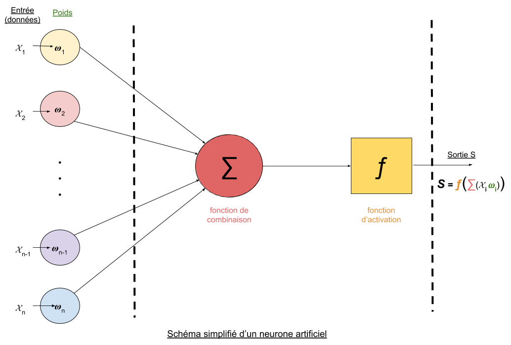

Notre algorithme est un Echo State Network (ESN), qui est issu d'une grande famille de réseaux de neurones appelée Reservoir Computing. Tous ces termes peuvent sembler flous au premier abord mais ils seront expliqués tout au long de notre protocole. En résumé, nous implémentons un réseau constitué de neurones artificiels qui possèdent un fonctionnement analogue à celui d'un neurone humain. Ce réseau contenant ces petites unités complexes permet de traiter des informations afin de retourner un résultat. Ces méthodes sont aujourd'hui répandues pour la reconnaissance faciale, la compression des images, la médecine, l'économie, ainsi que dans de nombreux autres domaines. Ici, notre ESN traite simultanément ce qu'on appelle des séries temporelles. Comme décrit brièvement dans l'introduction, une série temporelle est une suite de valeurs numériques représentant l'évolution d'une quantité au cours du temps. L'ESN doit donc pouvoir expliquer mathématiquement cette série afin d'analyser le comportement passé pour pouvoir prédire le comportement futur.
Les méthodes d'aprentissage par réseaux de neurones fonctionnent sur le principe de logique inductive, c'est à dire que l'on essaie de déterminer la solution la plus plausible à un problème à partir d'observations précédentes. Pour cela, on considère qu'il existe une fonction répondant parfaitement au problème, que l'on va tenter d'approximer par une combinaison linéaire de fonctions mathématiques.
Notre objectif lors de la phase dite "d'entraînement" du réseau est donc de déterminer les coefficients optimaux de cette combinaison linéaire, c'est à dire ceux qui minimisent l'erreur (qui est la différence entre la valeur réelle et celle prédite par le modèle). Ainsi, les données du problème sont stockées numériquement dans un vecteur d'entrée. Ce vecteur subit ensuite des opérations par des unités computationelles appelées neurones. Dans un réseau de neurones, ceux-ci sont disposés en couches de plusieurs neurones.
Les neurones sont des opérateurs algorithmiques prenant en entrée un vecteur, effectuant une combinaison linéaire des valeurs de celui-ci, puis calculant l'image du résultat par une fonction dite "d'activation". Cette dernière permet d’assurer la non linéarité du système. Les coefficients de la combinaison linéaire associés à chaque donnée sont appelés "poids", et ce sont eux qui seront amenés à être modifiés pour permettre l'apprentissage.

De la même façon que chaque neurone de la première couche calcule une combinaison des différentes données, chaque neurone de la couche suivante effectue une combinaison de ces combinaison, et ainsi de suite. L'objectif est d'avoir une fonction suffisament complexe mathématiquement pour pouvoir approximer le plus fidèlement possible les données.
Une fois que les données ont traversé la dernière couche, on obtient une valeur qui représente la prédiction du modèle. Dans notre cas, si cette valeur est plus proche de 0, le modèle prédira que l'œil est fermé, tandis que si elle est plus proche de 1, il prédira des yeux ouverts.
L’étape suivante est d’effectuer une “back-propagation”, ou descente de gradient. Cette opération revient à déterminer quel neurone de la couche précédente a eu la plus grosse influence négative sur la prédiction (celui qui fait différer le plus la valeur prédite de la valeur réelle). C'est grâce a cette descente de gradient que l'on est capable d'identifier pour quel(s) neurone(s) le poids doit être ajusté. Cette rétropropagation du gradient s'effectue dans le sens inverse de la prédiction : on commence par corriger les poids des neurones de la dernière couche, puis on effectue une descente de gradient sur chaque neurone de cette même couche pour déterminer quel(s) neurone(s) de la couche précédente a le plus influencé l'erreur commise par celui-ci, et ainsi de suite jusqu'à la couche d'entrée.
Le learning_rate, ou taux d'apprentissage, représente l'évolution de la modification des poids à chaque backpropagation. C'est un paramètre essentiel pour la phase d'optimisation du programme : un taux d'apprentissage trop faible signifie une convergence trop lente de la fonction approchée par le réseau, alors que trop élevé, il peut la faire diverger. De plus, modifier les poids à chaque fois que l'on fait passer une donnée dans le réseau de neurones demande beaucoup de calculs, c'est pourquoi il est nécessaire de faire passer un certain nombre de données dans le réseau de neurones avant d'effectuer la descente de gradient. C'est la variable batch_size qui définit le nombre de ces données, et il est également primordial de la prendre en compte lors de l'optimisation.
Le type de réseaux de neurones que nous avons décidé d'implémenter est l'ESN. Ce dernier se base sur le principe du Reservoir Computing : les couches intermédiaires de neurones sont remplacées par un ensemble de neurones appelé réservoir, liés entre eux de façon aléatoire, et dont les poids ne sont pas modifiés au cours de l’apprentissage. En effet seuls les poids des couches d’entrée et/ou de sortie sont pris en compte lors de la descente de gradient. Cette particularité permet de minimiser le nombre de modifications des poids, et donc de réduire le nombre de calculs effectués par l’ordinateur à chaque “back-propagation”.
La deuxième différence entre l'ESN et un réseau de neurone plus standard est le fait d'ajouter une variable dite "d'état" au réservoir. Cette variable correspond au fait que l'apprentissage prend en compte non seulement les valeurs d'entrée, mais aussi la prédiction précédente du modèle.
L'existence de cette variable facilite grandement l'apprentissage online. En effet, lorsque l'on veut travailler sur des séries temporelles, le modèle prend en entrée un certain nombre de valeurs prises à intervalles de temps réguliers, et tente de prédire la valeur suivante. L'état du réservoir représente sa capacité à se remémorer les motifs qui ont précédé. Toutefois, il est nécessairede contrebalancer cet effet, c'est à dire de faire "oublier" une partie de l'information au modèle, afin que les valeurs aberrantes ne prennent pas en compte les petites variations mais plutôt une tendance d'ensemble des changements d'état précédents. La variable nommé leaking_rate, ou taux de fuite du réservoir, représente à quel point la variable d'état est modifiée à chaque propagation, de la même façon que le taux d'apprentissage pour les poids.
Notre objectif est de trouver l'arrangement optimal des différents paramètres : les poids initiaux, le taux d'apprentissage, le nombre de neurones du réservoir, le batch_size, le leaking rate. Notre protocole de recherche consistera donc à faire varier un à un ces différents paramètres et d'étudier leur influence sur l'exactitude de la prédiction du modèle.
Les données dont nous disposons ont été divisées en trois parties: une première sur lesquelles le modèle va être entrainé, une seconde sur lesquels il sera testé et une dernière qui est une étape de validation du modèle. Chaque donnée d'entrée se présente sous la forme d'un vecteur comprenant les valeurs des dix derniers points des quatorzes courbes de l'EEG (140 valeurs. Ces données sont labélisées, c'est à dire que l'on connait l'état de sortie (œil ouvert ou fermé) à chaque instant t. Cet état est représenté par un entier: 1 pour l'œil ouvert, 0 pour l'œil fermé.)
Nos résultats ainsi que notre code sont présentés dans ce Jupyter Notebook.